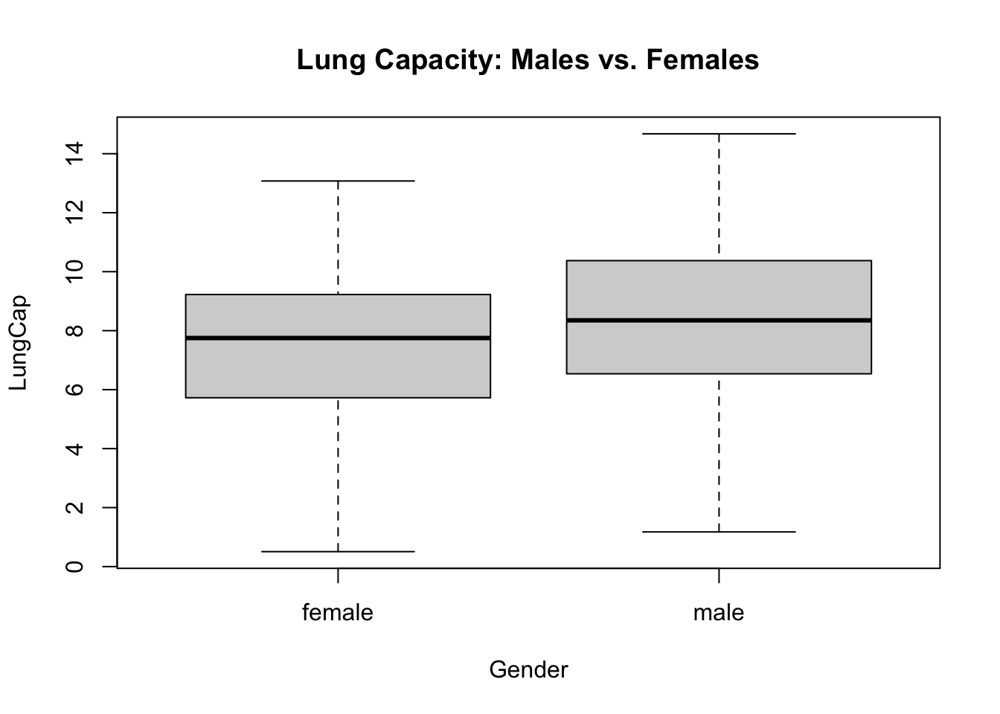
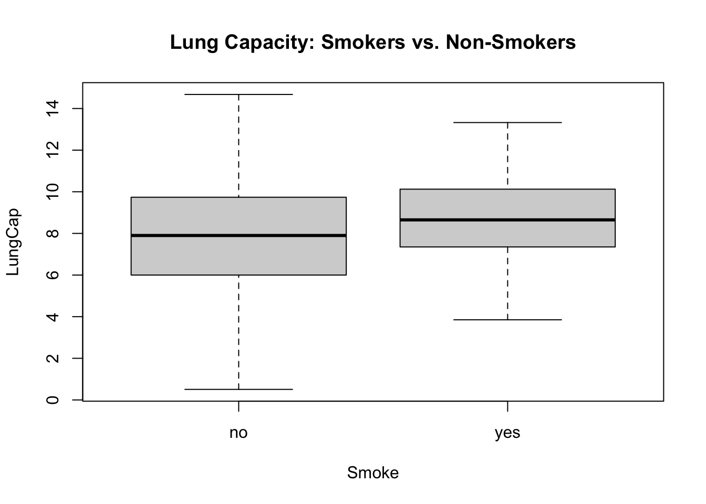
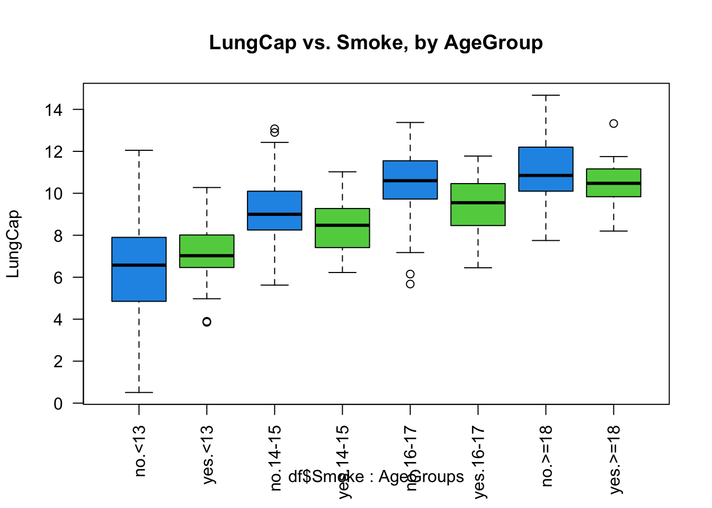

Code
library(readxl)
df <- read_excel("_data/LungCapData.xls")First, let’s read in the data from the Excel file:
library(readxl)
df <- read_excel("_data/LungCapData.xls")The distribution of LungCap looks as follows:
hist(df$LungCap)
The histogram suggests that the distribution is close to a normal distribution. Most of the observations are close to the mean. Very few observations are close to the margins (0 and 15).
The distribution and mean of the probability density of Lung Capacity can be shown in the box plots below, separated by genders ‘Male’ and ‘Female’
# Create a Box Plot with Lung Capacity on y-axis, grouped by gender
boxplot(LungCap~ Gender, data = df)
# Add a title
title("Lung Capacity: Males vs. Females")
The boxplot suggests that there is no significant difference between lung capacity of females and males, as the error bars of each boxplot significantly overlap. Additionally, the mean of the probability density of lung capacity appear to be close between female and male constituents.
# Create a Box Plot with Lung Capacity on y-axis, grouped by populations that smoke or do not smoke
boxplot(LungCap~ Smoke, data = df)
# Add a title
title("Lung Capacity: Smokers vs. Non-Smokers")
The boxplot suggests that smokers have a higher lung capacity than non-smokers, which is counter-intuitive.
#c Next, we will explore the differences of lung capacity of non-smokers and smokers, broken down by age group, as shown in the boxplot below. The green color is used to call out groups that do smoke while the blue color is used to call out groups that do not smoke.
#Group respondents into specific Age Groups
AgeGroups <- cut(df$Age, breaks=c(0,13,15,17,19), labels=c('<13','14-15','16-17','>=18'))
levels(AgeGroups)[1] "<13" "14-15" "16-17" ">=18" #Create a stratified box plot based on two factors: Smoking vs. Nonsmoking and Age groups
boxplot(df$LungCap~df$Smoke*AgeGroups, ylab="LungCap", main="LungCap vs. Smoke, by AgeGroup", las = 2, col=c(4,3))
From these boxplots, you can see that when you separate the smoking and nonsmoking groups by age, the smokers have a higher lung capacity than non-smokers. This is because age is a confounding variable, with young people gaining lung capacity as they have bigger bodies, and with older peope generally smoking more than younger people . Once you take out age from consideration and compare “apples to apples” people of the same age but differences in whether they smoke or not, you can see that smoking DOES have a negative effect on lung capacity.
Since the data set is not continuous or binomial, we will use basic probability functions to find probabilities.
#Calculate the probability of a prisoner having exactly 2 convictions (events/total possible events)
probability = (150/810) * 100
print(probability)[1] 18.51852We can see that the probability of a prisoner having exactly 2 convictions is 18.5%.
Next, we’ll look at the probability that a randomly selected inmate has fewer than 2 prior convictions.
# Calculate the probability of a prisoner having 0, or 1 convictions (fewer than 2 prior convictions) (events/total possible events)
lessthan2convictions <- 128 + 434
probabilitylessthan2 <- (lessthan2convictions/810) * 100
print(probabilitylessthan2)[1] 69.38272We can see that the probability of a prisoner having less than 2 convictions is 69.4%.
Next, we’ll look at the probability that a randomly selected inmate has 2 or less prior convictions.
# Calculate the probability of a prisoner having 0, 1, or 2 convictions ( 2 or fewer prior convictions) (events/total possible events)
twoorlessconvictions <- 128 + 434 + 160
probability2orless <- (twoorlessconvictions/810) * 100
print(probability2orless)[1] 89.1358We can see that the probability of a prisoner having 2 or less convictions is 89.1%.
Next, we’ll look at the probability that a randomly selected inmate has more than 2 prior convictions.
#Calculate the probability of a prisoner having more than 2 convictions ( 3 or 4 prior convictions) (events/total possible events)
morethan2convictions <- 64 + 24
probabilitymorethan2 <- (morethan2convictions/810) * 100
print(probabilitymorethan2)[1] 10.8642We can see that the probability of a prisoner having more than 2 convictions is 10.9%.
Here, we’ll calculate the expected value for the number of prior convictions.
#define values
x <- c(0,1,2,3,4)
#define probabilities
frequency <- c(128/810, 434/810, 160/810, 64/810, 24/810)
#calculate expected value
sum(x * frequency)[1] 1.28642The expected value is 1.29 prior convictions.
In this final section, we’ll calculate the variance and standard deviation for the prior convictions.
# calculate variance of frequencies
frequency <- c(128, 434, 160, 64, 24)
var(frequency)[1] 25948The variance is 5948.
# calculate standard deviation of prior convictions
frequency <- c(128, 434, 160, 64, 24)
sd(frequency)[1] 161.0838The standard deviation is 161.1.